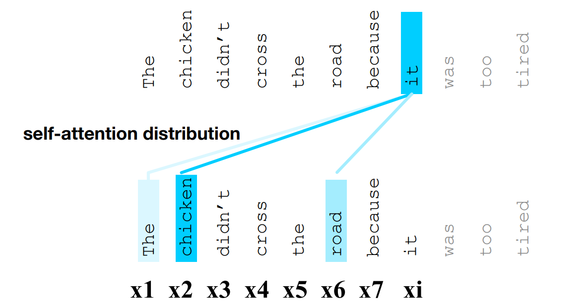
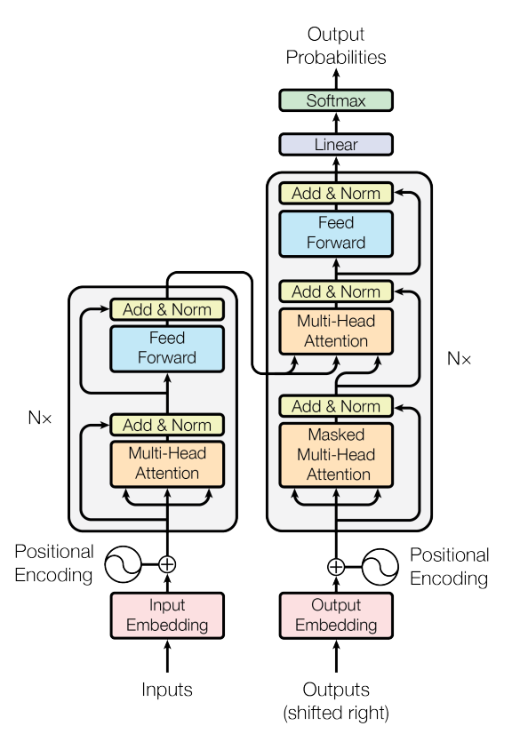
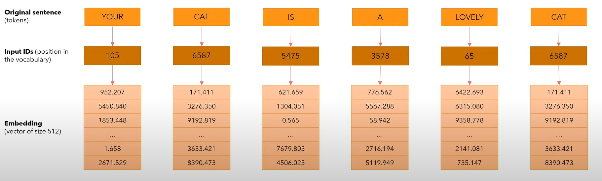
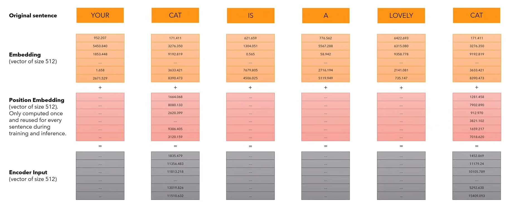
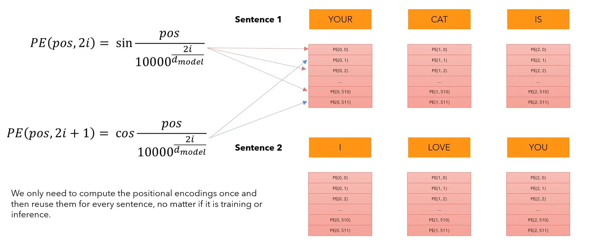
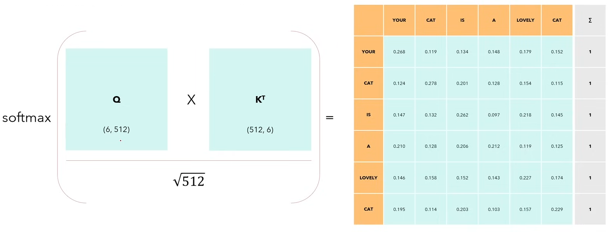
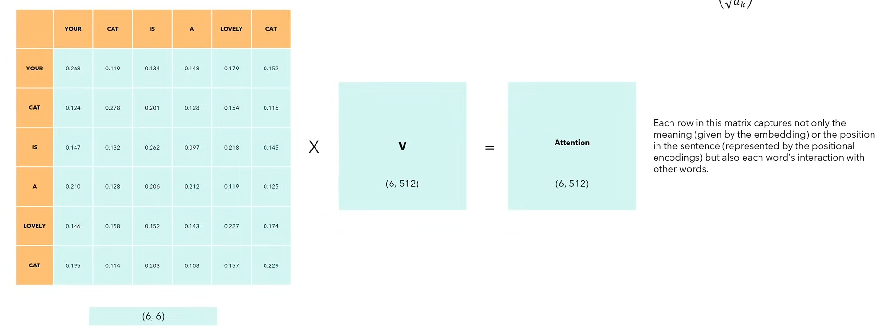
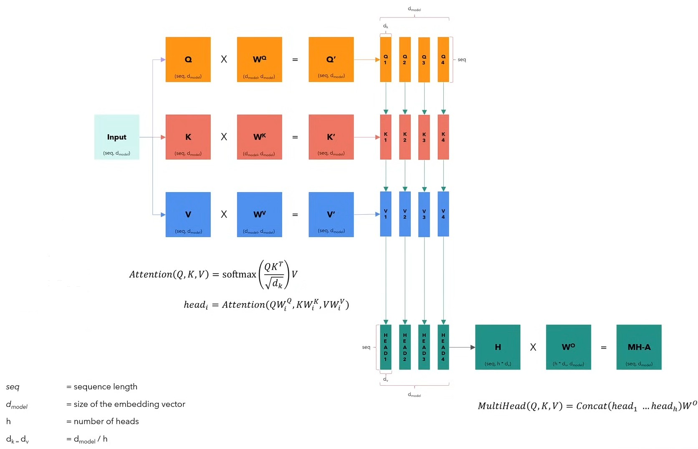
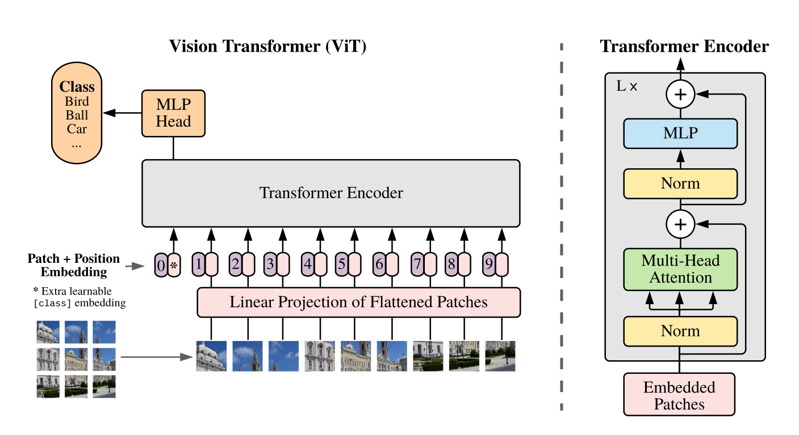
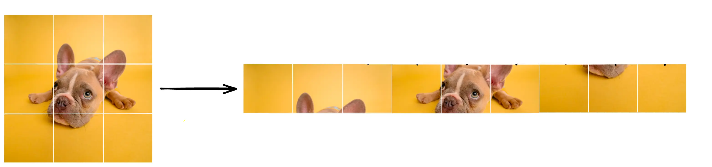

Curso Redes Neurais - Xmeeting 2026
Transformers e Vision Transformer (ViT)
Universidade Tecnológica Federal do Paraná, Cornélio Procópio (UTFPR-CP)
April 23, 2026
Problemática
Estabelecendo o problema
Uma das áreas mais antigas de inteligência artificial é natural language processing. A ideia geral é: Como aprender padrões tão complexos como a linguagem ?
Por exemplo dado uma frase: “Ela não é flor que se cheire”
Como devemos observar a frase para entender seu sentido ? Flor nesse caso, tem outro sentido da frase “Ele deu flores para namorada”.
Isso torna os padrões de uma língua muito mais difícil
Formalmente
Podemos definir o problema da nlp formalmente da forma:
\[ P(x_t|x_1, \cdots, x_{t-1}) \]
Uma das soluções clássicas são os modelos RNN, LSTM e GRU que foram projetados para lidar com sequências, em que o estado atual depende do anterior e a informação é propagada ao longo do tempo, a ideia consiste em:
\[ h_t = f(x_t, h_{t-1}) \]
Problemas da RNNs
Ao longo dos anos tentou-se resolver a grande limitação desses modelos, que eram capturar dependências de longo prazo, isso porque Informação relevante no início da sequência se perde ao longo do tempo e gradientes diminuem exponencialmente.
Exemplo: O livro que o professor que o aluno admira escreveu é complexo
Para entender “livro -> Complexo” o modelo precisa “ignorar” várias camadas intermediárias e as RNN tem dificuldade de fazer isso.
Problemas da RNNs
O principal problema se deve que a RNN é inerentemente sequencial:
\[ h_1 \rightarrow h_2 \rightarrow h_3 \rightarrow \cdots \]
Isso faz com que o treinamento seja lento e as derivadas dependam de múltiplas multiplicações de matrizes.
Objetivo do Transformers
Para resolver o problema apresentado, a ideia é criar um Embedding de Contexto: na qual cada palavra tem um vetor diferente que expressa significados diferentes dependendo das palavras a sua volta. E para computar isso é necessário de “Atenção”.

Arquitetura do Transformer
Como funciona um Transformer
A arquitetura do modelo pode ser vista na imagem abaixo. A principal novidade é o Multi Head Attention. Para entender como ele funciona, vamos ver um exemplo usando texto.

Input Embedding
Primeiro passo é o Input Embedding, na qual representamos os dados em uma nova forma. Perceba que cada palavra é representada por um vetor de tamanho 512, isso é importante porque simplesmente representar como “Carro = 1”, “Porta = 2”, primeiro não mostra o real significado de cada palavra, e palavras com proximidade não tem valores próximos.

Positional Encoding
Para um texto, queremos carregar a informação sobre a posição de uma palavra na frase e saber quais são as palavras mais próximas e mais distantes na frase, para isso usamos positional encoding. Quando formos ver a parte de atenção, vamos ver a importância do positional encoding porque ela não se importa com a posição, sendo assim precisamos de alguma forma incorporar isso nas representações.

Positional Encoding
Para calcular o position Encoding vamos usar a fómrula definida no artigo original. Que utiliza fórmulas trigonométricas como seno e cosseno para capturar padrões contínuos e periódicos.

Self-Attention
Antes de analisar o Multi-Head Attention, vamos entender como funciona o self attention ou single head attention. Atenção é um mecanismo que permite a rede neural aprender relacionar as diferentes partes de uma entrada. A fórmula para attention é dada por:
\[ Attention(Q, K, V) = softmax\left(\frac{QK^T}{\sqrt{d_k}}\right)V \]
\(QK^T\) é um produto escalar entre a query e a key, a divisão \(\sqrt{d_k}\) é para evitar saturação do softmax e o softmax é aplicado por linha.
Self-Attention
Mas quem é \(K\) key, \(Q\) query e \(V\) value:
Eles são projeções lineares aprendidas durante o treinamento da rede:
- \(Q = XW_Q\)
- \(K = XW_K\)
- \(V = XW_V\)
Na qual tanto \(Q,K \in \mathbb{R}^{n \times d_k}\) e \(V \in \mathbb{R}^{n \times d_v}\) . Com isso temos \(QK^T \in \mathbb{R}^{n \times n}\) e \(Attention \in \mathbb{R}^{n \times d_v}\).
Intuição Q, K, V
Podemos interpretar o mecanismo de atenção como um sistema de busca:
- Query (Q): o que estou procurando
- Key (K): o que cada palavra oferece
- Value (V): a informação associada
Para cada palavra:
- Comparamos Q com todas as K
- Obtemos pesos (importância)
- Fazemos média ponderada dos V
Self-Attention
Ao utilizarmos softmax garantimos que a soma resultante de cada linha na matriz seja 1. Podemos considerar esses valores como um score.

Self-Attention
A matriz final gerada pela self attention é capaz de capturar não apenas o significado dado pelo embedding, ou a posição (representada pelo positional encoding) mas também a interação de cada palavra com outras palavras.

Multi Head Attention
Contudo uma língua é muito mais difícil para apenas um self-attention, existem diferentes tipos de padrões. Por isso utilizamos várias “cabeças” ou heads ao mesmo tempo. Isso faz com que cada head aprenda subespaços diferentes. Ou seja, cada head pode focar em diferentes relações como: Dependência sintática, concordância, etc …
\[ head_i = Attention(QW^Q_i, KW_i^K, VW_i^V) \]
\[ MultiHead = Concat(head_1, \cdots, head_h)W^O \]
Multi Head Attention

Bloco do Transformer
Cada bloco do encoder segue as seguintes camadas:
- Multi-Head Attention
- Conexão Residual e Normalização
- Camada Densa
- Conexão Residual e Normalização
Isso é repetido várias vezes ao longo da rede.
Observação importante: Máscara
Na prática nós mascaramos os valores do triangulo da matriz formado pela multiplicação da query e da key. Motivo é para a palavra que estamos analisando não ter informação sobre o “futuro”, ou seja das palavras que sucedem ela.
\[ Attention(Q, K, V) = softmax\left(mask\left(\frac{QK^T}{\sqrt{d_k}}\right)\right)V \]
Observação importante: Máscara

ViT
História
Por muitos anos, as Redes Neurais Convolucionais (CNNs) dominaram a visão computacional, alcançando grandes resultados. Em 2017, um dos artigos mais importantes de redes neurais profundas foi publicado, intitulado ‘Attention is All you Need’, que estabelece uma nova abordagem para o aprendizado das redes neurais. Uma das principais capacidades da rede Transformer é a de capturar relações globais entre elementos. Pensando nisso, em 2021, foi proposta uma nova abordagem de redes neurais para visão computacional, o Visual Transformer.
Arquitetura
Visual Transformer (ViT) nada mais é do que uma extensão do modelo visto anteriormente. Usamos somente a parte do encoding do modelo transformer. A arquitetura do modelo de uma Vit pode ser vista na imagem abaixo. Vamos analisar cada parte individualmente.

Patching
Uma importante configuração do Visual Transformer é que ele foi desenvolvido para funcionar com sequências, como texto. Mas como transformamos imagens em sequências ? Para isso, vamos usar patches de imagens.

Funções Importantes
Após a imagem ser dividida em patches a primeira camada de uma ViT e o embedding, mas como fazer o embedding de uma imagem na prática? Normalmente usamos uma projeção linear sobre os patches com MLP ou CNN para criar esse embedding.
Assim como no transformer é feito um positional embedding das imagens. Além de usar todo aquela parte de funções trigonométricas, no ViT cada valor no positional encoding é um parâmetro que é aprendido pelo modelo.
Token especial
No ViT existe um patch adicional chamado de class token (CLS token), resumo de toda a imagem. Esse patch adicional começa como uma matriz de valores aleatórios e os pesos são aprendidos ao longo do treinamento. Normalmente utilizamos ele para predição da classe de uma imagem.
CNN x ViT:
- Na CNN, os filtros enxergam apenas uma pequena região da imagem por vez. Para capturar informações globais, são necessárias várias camadas, enquanto o ViT modela as relações globais desde o início, pois o multi head attention conecta qualquer pixel a qualquer outro, independentemente da posição.
- A CNN processa a imagem como um todo, aplicando convoluções sucessivas na imagem, enquanto o ViT divide as imagens em patches e trata cada um como um ‘token’.
- A CNN tem um forte viés indutivo porque possui a característica de ser invariante translacional, enquanto o ViT não tem um viés indutivo forte. Isso faz com que o ViT precise de mais dados para treinamento do que uma CNN.
Referências
Referências
- Vaswani, Ashish, et al. “Attention is all you need.” Advances in neural information processing systems 30 (2017).
- Lin, Tianyang, et al. “A survey of transformers.” AI open 3 (2022): 111-132.
- Dosovitskiy, Alexey, et al. “An image is worth 16x16 words: Transformers for image recognition at scale.” arXiv preprint arXiv:2010.11929 (2020).
Referências
- Jumper, John, et al. “Highly accurate protein structure prediction with AlphaFold.” nature 596.7873 (2021): 583-589.
- Lee, Seung Hoon, Seunghyun Lee, and Byung Cheol Song. “Vision transformer for small-size datasets.” arXiv preprint arXiv:2112.13492 (2021).
Curso Redes Neurais - CNNs | Lucas Otávio